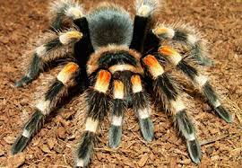
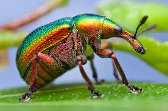

Turtles

Turtles are reptiles of the order Testudines (or Chelonii[3]) characterised by a special bony or cartilaginous shell developed from their ribs and acting as a shield.[4] "Turtle" may refer to the order as a whole (American English) or to fresh-water and sea-dwelling testudines (British English).[5]
Spiders
Spiders (order Araneae) are air-breathing arthropods that have eight legs and chelicerae with fangs that inject venom. They are the largest order of arachnids and rank seventh in total species diversity among all other orders of organisms.[2] Spiders are found worldwide on every continent except for Antarctica, and have become established in nearly every habitat with the exceptions of air and sea colonization. As of November 2015, at least 45,700 spider species, and 113 families have been recorded by taxonomists.[1] However, there has been dissension within the scientific community as to how all these families should be classified, as evidenced by the over 20 different classifications that have been proposed since 1900.[3]
Insects
Insects (from Latin insectum, a calque of Greek ἔντομον [éntomon], "cut into sections") are a class (Insecta) of hexapod invertebrates within the arthropod phylum that have a chitinous exoskeleton, a three-part body (head, thorax and abdomen), three pairs of jointed legs, compound eyes and one pair of antennae. They are the most diverse group of animals on the planet, including more than a million described species and representing more than half of all known living organisms.[2][3] The number of extant species is estimated at between six and ten million,[2][4][5] and potentially represent over 90% of the differing animal life forms on Earth.[6] Insects may be found in nearly all environments, although only a small number of species reside in the oceans, a habitat dominated by another arthropod group, crustaceans.
Please refresh the screen and type in turtles, spiders or insects.